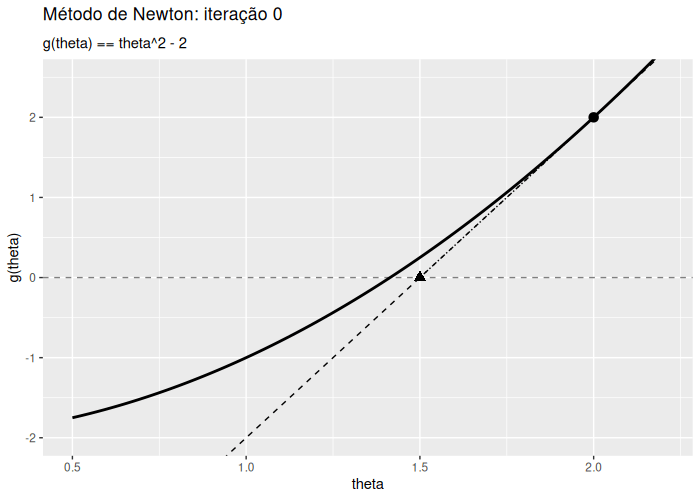
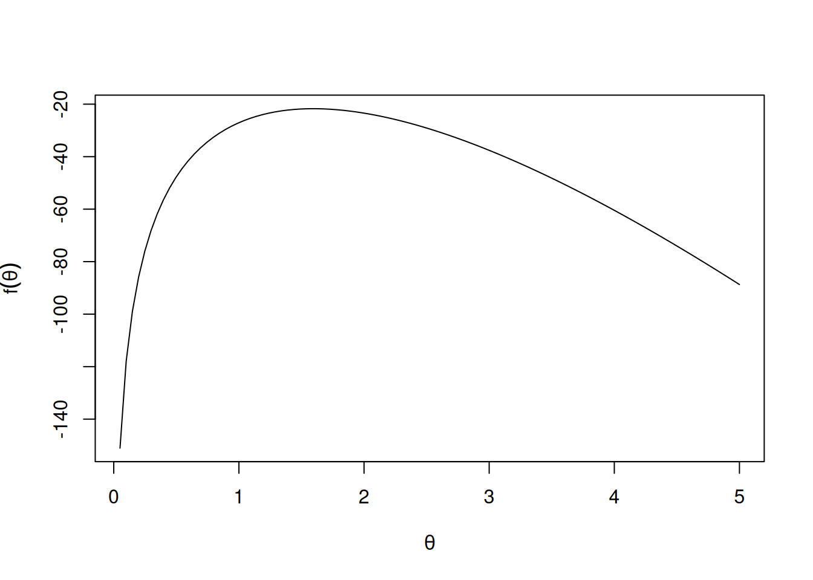

6 Otimização Numérica
A otimização numérica ocupa uma posição central na Estatística Computacional. Estimadores de máxima verossimilhança, ajustes por mínimos quadrados, modelos de mistura, procedimentos de inferência com parâmetros de alta dimensão e diversos algoritmos iterativos podem exigir a solução numérica de um problema de maximização ou minimização. Mesmo quando a formulação estatística é analítica, frequentemente não existe uma expressão fechada para o estimador, de modo que a inferência depende de um algoritmo de otimização.
Em problemas sem restrições, a tarefa pode ser escrita como
\[\min_{\theta\in\mathbb{R}^p} f(\theta),\]
ou, para uma maximização,
\[\max_{\theta\in\mathbb{R}^p} \ell(\theta).\]
Maximizar \(\ell(\theta)\) equivale a minimizar \(-\ell(\theta)\), mas não é, em geral, equivalente simplesmente a encontrar uma raiz de sua derivada sem verificar a natureza do ponto estacionário. Uma raiz de \(\nabla f(\theta)=0\) pode corresponder a mínimo, máximo ou ponto de sela. A informação de segunda ordem fornece critérios naturais de classificação quando a Hessiana é definida positiva ou negativa; em pontos degenerados ou com Hessiana semidefinida, porém, o teste de segunda ordem pode ser inconclusivo.
Base bibliográfica: a formulação geral de otimização e a distinção entre soluções locais e globais seguem Nocedal; Wright (2006) [Capítulo 1, especialmente pp. 6–7; Seção 2.1, pp. 12–16]. A relação entre localização de raízes e otimização, bem como a necessidade de classificar pontos estacionários, é discutida por Kroese; Taimre; Botev (2011, Apêndice C.2.2, pp. 687–688).
6.1 Objetivos de aprendizagem
Ao final deste capítulo, espera-se que o leitor seja capaz de:
- distinguir um problema de otimização de um problema de localização de raízes;
- interpretar condições de primeira e segunda ordem para extremos locais;
- derivar o método de Newton a partir de aproximações de Taylor;
- aplicar Newton tanto a equações não lineares quanto à otimização;
- reconhecer as condições que explicam sua convergência quadrática local;
- diagnosticar problemas decorrentes de valores iniciais inadequados, derivadas pequenas, Hessianas singulares ou indefinidas e soluções na fronteira;
- compreender o papel de amortecimento, busca linear e regiões de confiança;
- distinguir Newton–Raphson de escore de Fisher em máxima verossimilhança;
- implementar e diagnosticar algoritmos de Newton em R;
- usar
optimize()euniroot()em problemas estatísticos unidimensionais; - compreender por que métodos quasi-Newton, como BFGS, são alternativas importantes quando a Hessiana exata é cara.
Base bibliográfica: organização didática baseada principalmente em Nocedal; Wright (2006) [Capítulos 2–4, 6–8 e 11] e Kroese; Taimre; Botev (2011, Apêndices B e C). O uso de
optimize()euniroot()em máxima verossimilhança é baseado em Chihara; Hesterberg (2022, Exemplo 6.7 e nota de R, pp. 154–155).
6.2 Problemas de otimização e pontos estacionários
6.2.1 Mínimos e máximos locais
Definição
Um ponto \(\theta^\star\) é um mínimo local de \(f\) se existe uma vizinhança de \(\theta^\star\) tal que
\[f(\theta^\star)\leq f(\theta)\]
para todo \(\theta\) nessa vizinhança. Analogamente, \(\theta^\star\) é um máximo local se
\[f(\theta^\star)\geq f(\theta)\]
na vizinhança considerada.
Base bibliográfica: Nocedal; Wright (2006, seç. 2.1, pp. 12–13).
Se \(f:\mathbb{R}\to\mathbb{R}\) é diferenciável e \(\theta^\star\) é uma solução interior, uma condição necessária de primeira ordem é
\[f'(\theta^\star)=0.\]
Em dimensão \(p\), a condição correspondente é
\[\nabla f(\theta^\star)=0.\]
Um ponto que satisfaz essa equação é chamado de ponto estacionário.
Base bibliográfica: Nocedal; Wright (2006, seç. 2.1, especialmente pp. 14–16).
6.3 Informação de segunda ordem
No caso unidimensional, se
\[f'(\theta^\star)=0\]
e
\[f''(\theta^\star)>0,\]
então, sob condições regulares, \(\theta^\star\) é um mínimo local estrito. Se
\[f''(\theta^\star)<0,\]
o ponto é um máximo local estrito.
Em dimensão maior, a Hessiana
\[H(\theta) = \nabla^2 f(\theta)\]
substitui a segunda derivada. Em um ponto estacionário, uma Hessiana positiva definida é uma condição suficiente para um mínimo local estrito. Para maximização, aplica-se o resultado a \(-f\): equivalentemente, uma Hessiana negativa definida é uma condição suficiente para um máximo local estrito. Essas condições não são necessárias; se a Hessiana for apenas semidefinida ou degenerada, o teste de segunda ordem pode não determinar a natureza do ponto.
Base bibliográfica: Nocedal; Wright (2006, Teoremas 2.3–2.4, pp. 15–16).
Interpretação
Resolver \(\nabla f(\theta)=0\) e otimizar \(f\) são problemas relacionados, mas não idênticos. Um algoritmo de localização de raízes procura apenas zerar o gradiente. Um algoritmo de otimização deve também lidar com a geometria da função e, em implementações robustas, procurar passos que melhorem a função objetivo.
Base bibliográfica: Kroese; Taimre; Botev (2011) [Apêndice C.2.2, pp. 687–693] e Nocedal; Wright (2006, seç. 2.1–2.2, pp. 12–23).
6.4 Método de Newton para equações não lineares
Considere inicialmente o problema escalar
\[g(\theta)=0.\]
Seja \(\theta_k\) uma aproximação corrente da raiz. A expansão de Taylor de primeira ordem em torno de \(\theta_k\) fornece
\[g(\theta) = g(\theta_k) + g'(\theta_k)(\theta-\theta_k) + O\left((\theta-\theta_k)^2\right).\]
Para \(\theta\) suficientemente próximo de \(\theta_k\), utiliza-se o modelo linear
\[g(\theta) \approx g(\theta_k) + g'(\theta_k)(\theta-\theta_k).\]
A nova aproximação é escolhida como a raiz desse modelo linear. Fazendo o lado direito igual a zero,
\[0 = g(\theta_k) + g'(\theta_k)(\theta_{k+1}-\theta_k),\]
e, se \(g'(\theta_k)\neq 0\),
\[\boxed{ \theta_{k+1} = \theta_k - \frac{g(\theta_k)} {g'(\theta_k)} }.\]
Base bibliográfica: Kroese; Taimre; Botev (2011) [Apêndice C.2.2.1, pp. 688–689] e Nocedal; Wright (2006, seç. 11.1, pp. 275–276).
Definição
O método de Newton ou Newton–Raphson para uma equação escalar \(g(\theta)=0\) constrói uma sequência \(\{\theta_k\}\) pela recorrência
\[\theta_{k+1} = \theta_k - \frac{g(\theta_k)} {g'(\theta_k)},\]
sempre que o denominador seja não nulo.
Base bibliográfica: Kroese; Taimre; Botev (2011, Apêndice C.2.2.1, pp. 688–689).
6.4.1 Interpretação geométrica
O modelo
\[m_k(\theta) = g(\theta_k) + g'(\theta_k)(\theta-\theta_k)\]
é a reta tangente a \(g\) no ponto \((\theta_k,g(\theta_k))\). A próxima aproximação \(\theta_{k+1}\) é o ponto em que essa reta intercepta o eixo horizontal.
Interpretação
Newton substitui localmente uma função não linear por um modelo linear cuja raiz é fácil de calcular. Se a aproximação local for boa e a derivada não estiver próxima de zero, a nova aproximação tende a ficar muito mais próxima da raiz.
Base bibliográfica: Nocedal; Wright (2006) [Seção 11.1, pp. 275–276] e Kroese; Taimre; Botev (2011, Apêndice C.2.2.1, pp. 688–689).
6.4.1.1 Animação do método de Newton
A animação a seguir ilustra o método de Newton aplicado à equação \(g(\theta)=\theta^2-2=0\). A raiz positiva é \(\sqrt{2}\).
Base bibliográfica: construção gráfica baseada na interpretação geométrica do método de Newton em Kroese; Taimre; Botev (2011, Apêndice C.2.2.1, pp. 688–689).
6.4.2 Forma multivariada
Para um sistema
\[r(\theta)=0, \qquad r:\mathbb{R}^p\to\mathbb{R}^p,\]
seja \(J(\theta)\) a matriz Jacobiana. O modelo linear em torno de \(\theta_k\) é
\[r(\theta_k+p) \approx r(\theta_k) + J(\theta_k)p.\]
O passo de Newton \(p_k\) é obtido resolvendo
\[J(\theta_k)p_k = -r(\theta_k),\]
e a atualização é
\[\theta_{k+1} = \theta_k+p_k.\]
Do ponto de vista numérico, é preferível resolver o sistema linear para \(p_k\) em vez de calcular explicitamente \(J(\theta_k)^{-1}\).
Base bibliográfica: Nocedal; Wright (2006) [Algoritmo 11.1, pp. 274–275] e Kroese; Taimre; Botev (2011, Apêndice C.2.2.1, pp. 688–689).
6.5 Método de Newton para otimização
Para minimizar uma função suave \(f:\mathbb{R}^p\to\mathbb{R}\), utiliza-se o modelo quadrático de Taylor
\[m_k(p) = f(\theta_k) + \nabla f(\theta_k)^\top p + \frac{1}{2} p^\top \nabla^2 f(\theta_k) p.\]
Se a Hessiana \(\nabla^2 f(\theta_k)\) é positiva definida, o mínimo desse modelo é obtido pela condição
\[\nabla f(\theta_k) + \nabla^2 f(\theta_k)p_k = 0.\]
Portanto, o passo de Newton satisfaz
\[\boxed{ \nabla^2 f(\theta_k)p_k = -\nabla f(\theta_k) }\]
e
\[\boxed{ \theta_{k+1} = \theta_k+p_k. }\]
Quando se escreve formalmente a inversa,
\[p_k = - \left[ \nabla^2 f(\theta_k) \right]^{-1} \nabla f(\theta_k),\]
mas uma implementação numérica deve, em geral, resolver o sistema linear anterior.
Base bibliográfica: Nocedal; Wright (2006, seç. 2.2, Eq. 2.14–2.15, pp. 22–23).
6.5.1 Caso unidimensional
Se \(p=1\), a fórmula reduz-se a
\[\boxed{ \theta_{k+1} = \theta_k - \frac{f'(\theta_k)} {f''(\theta_k)} }.\]
Isso também pode ser obtido aplicando o método de Newton para raízes à equação
\[g(\theta)=f'(\theta)=0.\]
Base bibliográfica: relação entre Newton para raízes do gradiente e Newton para otimização em Nocedal; Wright (2006) [Seção 11.1, pp. 275–276] e Kroese; Taimre; Botev (2011, Apêndice C.2.2.1, pp. 688–689).
Observação
A fórmula de Newton define uma direção de descida para minimização quando a Hessiana é positiva definida. Se a Hessiana for singular, o passo pode não estar definido. Se for indefinida, o passo pode existir e ainda assim não ser uma direção de descida.
Base bibliográfica: Nocedal; Wright (2006) [Seção 2.2, pp. 22–23; Seção 3.4, pp. 48–56].
6.5.2 Maximização
Para maximizar uma função \(\ell(\theta)\), pode-se minimizar \(-\ell(\theta)\). A atualização de Newton escrita diretamente para \(\ell\) mantém a forma
\[\theta_{k+1} = \theta_k - \left[ \nabla^2\ell(\theta_k) \right]^{-1} \nabla\ell(\theta_k).\]
Perto de um máximo local estrito, espera-se que
\[\nabla^2\ell(\theta^\star)\]
seja negativa definida. Nesse caso, a Hessiana de \(-\ell\) é positiva definida.
Base bibliográfica: condições de segunda ordem em Nocedal; Wright (2006) [Seção 2.1, pp. 14–16] e passo de Newton em Nocedal; Wright (2006, seç. 2.2, pp. 22–23).
6.6 Convergência local do método de Newton
Uma das principais vantagens do método de Newton é sua taxa de convergência local. Se o ponto inicial está suficientemente próximo de uma solução \(\theta^\star\) que satisfaz as condições suficientes de segunda ordem, a Hessiana é Lipschitz-contínua em uma vizinhança da solução e são tomados passos completos de Newton, a sequência converge quadraticamente.
De maneira simplificada, convergência quadrática significa que, para \(k\) suficientemente grande,
\[\|\theta_{k+1}-\theta^\star\| \leq C \|\theta_k-\theta^\star\|^2\]
para alguma constante \(C>0\).
Base bibliográfica: Nocedal; Wright (2006, Teorema 3.5, pp. 44–45).
Interpretação
Quando o algoritmo já entrou na vizinhança em que a aproximação quadrática é precisa, o número de algarismos corretos pode crescer muito rapidamente. Essa é a razão para a conhecida eficiência local de Newton.
Base bibliográfica: Nocedal; Wright (2006) [Seção 2.2, pp. 22–23; Teorema 3.5, pp. 44–45].
Observação
A convergência quadrática é uma propriedade local, não uma garantia de que qualquer valor inicial produzirá convergência. Longe da solução, o método puro pode produzir passos ruins ou até divergir.
Base bibliográfica: Nocedal; Wright (2006) [Seção 11.1, pp. 275–276] e Kroese; Taimre; Botev (2011, Apêndice C.2.2.1, pp. 688–689).
6.7 Critérios de convergência e parada
Em otimização, um critério natural é verificar se o gradiente está próximo de zero:
\[\|\nabla f(\theta_k)\| \leq \varepsilon_g.\]
O Algoritmo BFGS apresentado por Nocedal; Wright (2006), por exemplo, utiliza a norma do gradiente como critério de terminação. Em um problema de raízes, neste capítulo adotaremos analogamente o critério
\[\|g(\theta_k)\| \leq \varepsilon_g.\]
Base bibliográfica: o critério de norma do gradiente aparece em Nocedal; Wright (2006) [Algoritmo 6.1, pp. 140–141]. A recorrência de Newton para equações não lineares é apresentada por Kroese; Taimre; Botev (2011, Apêndice C.2.2.1, pp. 688–689) e Nocedal; Wright (2006, Algoritmo 11.1, pp. 275–276); o critério de resíduo acima é uma escolha de implementação adotada neste capítulo.
Uma implementação pode também monitorar o tamanho relativo do passo,
\[\frac{ \|\theta_{k+1}-\theta_k\| }{ 1+\|\theta_{k+1}\| } \leq \varepsilon_\theta,\]
e a mudança relativa na função objetivo,
\[\frac{ |f(\theta_{k+1})-f(\theta_k)| }{ 1+|f(\theta_{k+1})| } \leq \varepsilon_f.\]
Além disso, deve-se impor um número máximo de iterações.
Observação computacional
A combinação simultânea de critérios baseados em gradiente, tamanho do passo, mudança da função objetivo e número máximo de iterações é uma recomendação de implementação adotada neste capítulo. As fontes sustentam o uso de testes de convergência, mas esta combinação específica deve ser entendida como uma estratégia computacional, e não como um teorema universal.
6.8 Sensibilidade aos valores iniciais
O desempenho de Newton depende fortemente do valor inicial. Em problemas de raízes, um ponto inicial distante pode conduzir a comportamento errático; em otimização, pode levar a uma região associada a outro ponto estacionário ou produzir passos que não melhoram a função.
Base bibliográfica: Nocedal; Wright (2006) [Seção 11.1, pp. 275–276] e Kroese; Taimre; Botev (2011, Apêndice C.2.2.1, pp. 688–689).
Interpretação
O valor inicial define a região do espaço paramétrico a partir da qual o modelo local é construído. Newton não “vê” toda a função; em cada iteração, ele usa apenas informação local de primeira e segunda ordem.
Base bibliográfica: interpretação baseada na construção local de Taylor em Nocedal; Wright (2006, seç. 2.2 e 11.1).
Em máxima verossimilhança, Kroese; Taimre; Botev (2011) sugere que estimativas de momentos podem fornecer valores iniciais naturais em alguns modelos. Essa estratégia é particularmente útil quando o escore e a Hessiana são complicados.
Base bibliográfica: Kroese; Taimre; Botev (2011, seç. B.2.2, p. 670).
6.9 Hessiana singular, indefinida e problemas de condicionamento
6.9.1 Derivada pequena no caso escalar
Na atualização
\[\theta_{k+1} = \theta_k - \frac{g(\theta_k)}{g'(\theta_k)},\]
um valor de \(g'(\theta_k)\) próximo de zero pode gerar um passo de grande magnitude. A mesma dificuldade aparece em dimensão maior quando a Jacobiana ou Hessiana é singular ou quase singular.
Base bibliográfica: Nocedal; Wright (2006, seç. 11.1, pp. 275–276).
6.9.2 Hessiana indefinida
Em minimização, se
\[\nabla^2 f(\theta_k)\]
não é positiva definida, o passo de Newton pode não ser de descida. Uma abordagem clássica é modificar a Hessiana de forma a obter uma matriz positiva definida antes de calcular a direção.
Base bibliográfica: Nocedal; Wright (2006, seç. 3.4, pp. 48–56).
6.9.3 Custo computacional
Em dimensão elevada, calcular, armazenar e fatorar a Hessiana pode ser caro. O custo pode tornar o Newton exato impraticável, motivando métodos de Newton inexato, Newton–CG, métodos sem formação explícita da Hessiana e métodos de memória limitada.
Base bibliográfica: Nocedal; Wright (2006, cap. 7, especialmente Seções 7.1–7.2, pp. 164–184).
Observação
Não se deve implementar o passo multivariado calculando explicitamente
\[\left[\nabla^2 f(\theta_k)\right]^{-1}.\]
O problema numericamente apropriado é resolver
\[\nabla^2 f(\theta_k)p_k=-\nabla f(\theta_k).\]
Base bibliográfica: formulação dos passos de Newton como sistemas lineares em Nocedal; Wright (2006) [Seção 7.1, pp. 164–168; Algoritmo 11.1, pp. 275–276].
6.10 Globalização do método de Newton
A excelente convergência local de Newton não garante bom comportamento a partir de pontos iniciais remotos. Métodos práticos incorporam mecanismos de globalização, cujo objetivo é produzir progresso confiável antes de a iteração entrar na região em que o passo de Newton completo é apropriado.
Base bibliográfica: Nocedal; Wright (2006) [Capítulos 3 e 4] e Kroese; Taimre; Botev (2011, Apêndice C.2.2, pp. 687–693).
6.10.1 Newton amortecido
Em vez de usar sempre
\[\theta_{k+1} = \theta_k+p_k,\]
pode-se introduzir um comprimento de passo
\[\alpha_k\in(0,1]\]
e escrever
\[\theta_{k+1} = \theta_k+\alpha_k p_k.\]
Para o Newton puro, \(\alpha_k=1\). Quando o passo completo não produz comportamento satisfatório, \(\alpha_k\) pode ser reduzido.
Base bibliográfica: Kroese; Taimre; Botev (2011) [Apêndice C.2.2.1, pp. 688–689] e Nocedal; Wright (2006, cap. 3, pp. 30–65).
6.10.2 Busca linear
Uma busca linear escolhe \(\alpha_k\) ao longo de uma direção \(p_k\). Define-se
\[\phi(\alpha) = f(\theta_k+\alpha p_k)\]
e busca-se um valor de \(\alpha\) que produza diminuição suficiente sem gastar um número excessivo de avaliações da função.
Base bibliográfica: Nocedal; Wright (2006) [Seção 3.1, pp. 31–37] e Kroese; Taimre; Botev (2011, Apêndice C.2.2.5, pp. 691–692).
6.10.2.1 Backtracking
Uma forma simples começa com \(\alpha=1\) e reduz progressivamente esse valor até obter redução suficiente. Em métodos de Newton, essa estratégia permite usar o passo completo sempre que ele já for adequado.
Base bibliográfica: Nocedal; Wright (2006, seç. 3.1, especialmente pp. 37–38).
Interpretação
Perto de uma solução regular, condições usuais de busca linear acabam aceitando \(\alpha_k=1\). Assim, a globalização pode proteger a fase inicial sem destruir a rápida convergência local de Newton.
Base bibliográfica: Nocedal; Wright (2006, seç. 3.3, pp. 44–47).
6.10.3 Regiões de confiança
Em métodos de região de confiança, o modelo quadrático é considerado confiável somente em uma vizinhança do ponto corrente:
\[\|p\| \leq \Delta_k.\]
O algoritmo decide o passo comparando a redução efetivamente observada com a redução prevista pelo modelo. Quando o modelo é preciso, a região pode ser ampliada; quando é pouco confiável, ela é reduzida.
Base bibliográfica: Nocedal; Wright (2006, cap. 4, pp. 66–100).
6.11 Métodos quasi-Newton
A principal desvantagem do Newton exato é a necessidade da Hessiana. Métodos quasi-Newton substituem \(\nabla^2 f(\theta_k)\) ou sua inversa por aproximações construídas a partir da evolução dos gradientes.
Base bibliográfica: Nocedal; Wright (2006) [Capítulo 6, pp. 135–163] e Kroese; Taimre; Botev (2011, Apêndice C.2.2.3, p. 690).
6.11.1 BFGS
Defina
\[s_k = \theta_{k+1}-\theta_k\]
e
\[y_k = \nabla f(\theta_{k+1}) - \nabla f(\theta_k).\]
O BFGS atualiza uma aproximação da Hessiana ou de sua inversa usando esses vetores e uma condição secante. Em sua forma baseada na aproximação da inversa \(H_k\), o passo é
\[p_k = -H_k\nabla f(\theta_k).\]
Com busca linear apropriada, o método apresenta convergência superlinear em condições regulares e evita o cálculo explícito de segundas derivadas.
Base bibliográfica: Nocedal; Wright (2006, seç. 6.1, especialmente pp. 136–142).
Interpretação
Newton investe mais informação de segunda ordem em cada iteração e pode atingir convergência quadrática local. BFGS economiza a Hessiana exata, usando a mudança dos gradientes para aprender progressivamente a curvatura da função.
Base bibliográfica: Nocedal; Wright (2006, seç. 6.1, pp. 140–142).
6.11.2 L-BFGS e problemas de grande dimensão
Quando o número de parâmetros é grande, armazenar uma matriz densa \(p\times p\) pode ser proibitivo. O L-BFGS mantém apenas um número limitado de pares recentes \((s_k,y_k)\) e representa implicitamente a aproximação da Hessiana inversa.
Base bibliográfica: Nocedal; Wright (2006, seç. 7.2, pp. 176–184).
6.12 Cálculo de derivadas
O método de Newton depende de derivadas. Erros de derivação podem alterar completamente a direção de busca, como ocorre no exemplo revisado mais adiante.
6.12.1 Derivação analítica
Quando expressões fechadas são disponíveis, gradientes e Hessianas analíticas são uma opção natural. Entretanto, em modelos grandes, sua obtenção manual pode ser trabalhosa e sujeita a erros.
Base bibliográfica: Nocedal; Wright (2006) [Seção 2.2, pp. 22–23; Capítulo 8, pp. 193–219].
6.12.2 Diferenças finitas
Uma derivada pode ser aproximada por diferença central:
\[f'(\theta) \approx \frac{ f(\theta+h)-f(\theta-h) }{ 2h }.\]
Sob condições de suavidade, o erro de truncamento dessa fórmula é de ordem \(O(h^2)\), embora a escolha de \(h\) também precise considerar erros de arredondamento.
Base bibliográfica: Nocedal; Wright (2006, seç. 8.1, pp. 194–197).
6.12.2.1 Implementação simples em R
derivada_central <- function(f, x, h = 1e-5) {
(f(x + h) - f(x - h)) / (2 * h)
}Base bibliográfica: fórmula baseada em Nocedal; Wright (2006, seç. 8.1, pp. 196–197).
6.12.3 Diferenciação automática
A diferenciação automática aplica sistematicamente a regra da cadeia às operações usadas na avaliação de uma função, permitindo obter derivadas com custo controlado e sem recorrer diretamente à diferença entre valores muito próximos.
Base bibliográfica: Nocedal; Wright (2006, seç. 8.2, pp. 204–217).
6.12.4 A função D() do R
É possível realizar diferenciação simbólica no R usando a função D(). Veja o exemplo abaixo:
f <- expression(x^4)
d1 <- D(f, "x")
d2 <- D(d1, "x")
d14 * x^3d24 * (3 * x^2)Uma função recursiva para derivadas de ordem arbitrária pode ser escrita como:
Dn <- function(expressao, variavel, ordem = 1) {
if (ordem < 1) {
stop("ordem deve ser >= 1")
}
if (ordem == 1) {
return(D(expressao, variavel))
}
Dn(
D(expressao, variavel),
variavel,
ordem - 1
)
}
Dn(expression(x^4), "x", 1)4 * x^3Dn(expression(x^4), "x", 2)4 * (3 * x^2)Dn(expression(x^4), "x", 3)4 * (3 * (2 * x))6.13 Newton–Raphson em máxima verossimilhança
Seja
\[\ell(\theta)\]
a log-verossimilhança e defina o escore
\[U(\theta) = \frac{\partial \ell(\theta)} {\partial\theta}.\]
Um estimador de máxima verossimilhança interior \(\widehat{\theta}\), sob condições regulares, satisfaz
\[U(\widehat{\theta})=0.\]
Aplicando Newton à equação de escore,
\[\theta_{k+1} = \theta_k - \frac{ U(\theta_k) }{ U'(\theta_k) }.\]
Base bibliográfica: Kroese; Taimre; Botev (2011, seç. B.2.2, Algoritmo B.1, p. 670).
6.13.1 Informação observada
Defina a informação observada escalar por
\[j(\theta) = - \frac{\partial^2\ell(\theta)} {\partial\theta^2} = -U'(\theta).\]
Então Newton–Raphson pode ser escrito como
\[\boxed{ \theta_{k+1} = \theta_k + \frac{ U(\theta_k) }{ j(\theta_k) } }.\]
Em dimensão \(p\),
\[\boxed{ \theta_{k+1} = \theta_k + j(\theta_k)^{-1} U(\theta_k), }\]
onde, em implementação, deve-se resolver o sistema linear correspondente em vez de formar a inversa explicitamente.
Base bibliográfica: Kroese; Taimre; Botev (2011, seç. B.2.2, Eq. B.24, p. 670).
6.13.2 Escore de Fisher
A informação de Fisher esperada é
\[I(\theta) = E_\theta\left[ j(\theta;X) \right].\]
Quando a informação observada \(j(\theta_k)\) é substituída pela informação esperada \(I(\theta_k)\), a atualização torna-se
\[\boxed{ \theta_{k+1} = \theta_k + I(\theta_k)^{-1} U(\theta_k). }\]
Neste capítulo, essa atualização por informação esperada será denominada escore de Fisher (Fisher scoring).
Base bibliográfica para a atualização: Kroese; Taimre; Botev (2011, seç. B.2.2, Eq. B.25, p. 670).
6.14 Implementação do método de Newton em R
6.14.1 Função genérica para localização de raízes
A implementação abaixo registra o histórico das iterações e inclui verificações elementares para derivadas muito pequenas e valores não finitos.
newton_raiz <- function(g, gp, theta0,
tol_g = 1e-8,
tol_theta = 1e-10,
maxit = 100) {
theta <- theta0
historico <- data.frame(
iter = 0,
theta = theta,
g = g(theta)
)
for (iter in seq_len(maxit)) {
valor_g <- g(theta)
valor_gp <- gp(theta)
if (!is.finite(valor_g) || !is.finite(valor_gp)) {
stop("g(theta) ou g'(theta) não é finito.")
}
if (abs(valor_gp) < sqrt(.Machine$double.eps)) {
stop("Derivada muito próxima de zero.")
}
passo <- -valor_g / valor_gp
theta_new <- theta + passo
g_new <- g(theta_new)
historico <- rbind(
historico,
data.frame(
iter = iter,
theta = theta_new,
g = g_new
)
)
erro_theta <- abs(theta_new - theta) /
(1 + abs(theta_new))
theta <- theta_new
if (abs(g_new) <= tol_g ||
erro_theta <= tol_theta) {
return(list(
root = theta,
iter = iter,
convergiu = TRUE,
historico = historico
))
}
}
list(
root = theta,
iter = maxit,
convergiu = FALSE,
historico = historico
)
}Base bibliográfica: recorrência de Newton baseada em Kroese; Taimre; Botev (2011) [Apêndice C.2.2.1, pp. 688–689] e Nocedal; Wright (2006, Algoritmo 11.1, pp. 275–276). As verificações e a estrutura do código são autorais.
Exemplo: raiz de \(g(\theta)=\theta^2-2\)
g <- function(theta) theta^2 - 2
gp <- function(theta) 2 * theta
ajuste <- newton_raiz(
g,
gp,
theta0 = 2
)
ajuste$root[1] 1.414214ajuste$iter[1] 4ajuste$convergiu[1] TRUEajuste$historico iter theta g
1 0 2.000000 2.000000e+00
2 1 1.500000 2.500000e-01
3 2 1.416667 6.944444e-03
4 3 1.414216 6.007305e-06
5 4 1.414214 4.510614e-12A raiz positiva é \(\sqrt{2}\). O exemplo tem finalidade exclusivamente didática.
Base conceitual: Kroese; Taimre; Botev (2011, Apêndice C.2.2.1, pp. 688–689).
6.15 Exemplo estatístico: máxima verossimilhança para localização Cauchy
Chihara; Hesterberg (2022) apresenta um exemplo no qual
\[X_1=1,\qquad X_2=2,\qquad X_3=2,\qquad X_4=3\]
são modelados por uma distribuição de Cauchy com parâmetro de localização \(\theta\) e escala unitária.
A log-verossimilhança, exceto por uma constante, é
\[\ell(\theta) = - \sum_{i=1}^{n} \log \left[ 1+(x_i-\theta)^2 \right].\]
A solução não requer que se obtenha uma expressão fechada para o estimador; pode-se maximizar numericamente a log-verossimilhança.
Base bibliográfica: exemplo de Chihara; Hesterberg (2022, Exemplo 6.7 e nota de R, pp. 154–155).
6.15.1 Usando optimize()
x <- c(1, 2, 2, 3)
logL <- function(theta) {
sum(log(dcauchy(x, location = theta)))
}
optimize(
logL,
interval = c(0, 4),
maximum = TRUE
)$maximum
[1] 2
$objective
[1] -5.965214O máximo ocorre em
\[\widehat{\theta}=2.\]
Base bibliográfica: código adaptado da nota de R em Chihara; Hesterberg (2022, p. 155).
6.15.2 Usando uniroot()
O escore é
\[U(\theta) = 2 \sum_{i=1}^n \frac{ x_i-\theta }{ 1+(x_i-\theta)^2 }.\]
Assim, pode-se localizar numericamente a raiz de \(U(\theta)=0\):
score <- function(theta) {
2 * sum(
(x - theta) /
(1 + (x - theta)^2)
)
}
uniroot(
score,
interval = c(1.5, 2.5)
)$root
[1] 2
$f.root
[1] 0
$iter
[1] 1
$init.it
[1] NA
$estim.prec
[1] 0.5Base bibliográfica: Chihara; Hesterberg (2022, p. 155) recomenda explicitamente as duas abordagens: otimizar a log-verossimilhança com
optimize()ou resolver numericamente a equação da derivada comuniroot(). A expressão do escore acima foi derivada para este capítulo a partir da log-verossimilhança do exemplo.
Interpretação
Esse exemplo ilustra a diferença entre as duas tarefas computacionais:
optimize()trabalha diretamente com a função objetivo;uniroot()trabalha com a equação de escore.
As duas abordagens coincidem aqui porque a raiz encontrada corresponde ao máximo relevante da log-verossimilhança no intervalo considerado.
Base bibliográfica: Chihara; Hesterberg (2022, p. 155).
6.16 Exemplo
Considere
\[f(\theta) = 100\log(\theta) - 50\theta - 50\log \left( 1-e^{-\theta} \right), \qquad \theta>0.\]
As derivadas são
\[f'(\theta) = \frac{100}{\theta} - 50 - \frac{50}{e^\theta-1}\]
e
\[f''(\theta) = - \frac{100}{\theta^2} + \frac{ 50e^\theta }{ (e^\theta-1)^2 }.\]
6.16.1 Gráfico da função

6.16.2 Maximização direta com optimize()
f <- function(theta) {
100 * log(theta) -
50 * theta -
50 * log1p(-exp(-theta))
}
resultado <- optimize(
f,
interval = c(0.001, 5),
maximum = TRUE
)
resultado$maximum[1] 1.593607resultado$objective[1] -21.72331A solução numérica é aproximadamente
\[\widehat{\theta} \approx 1.593624,\]
com
\[f(\widehat{\theta}) \approx -21.72331.\]
Base bibliográfica para o uso de
optimize(): Chihara; Hesterberg (2022, p. 155).
Origem do exemplo: a função objetivo foi preservada do manuscrito fornecido pelo autor. Ela não foi localizada nos livros da pasta Fontes_Computacionais durante esta revisão. Caso se deseje atribuir a função a uma referência bibliográfica, é necessária verificação adicional.
6.16.3 Resolvendo \(f'(\theta)=0\) com uniroot()
d1 <- function(theta) {
100 / theta -
50 -
50 / expm1(theta)
}
uniroot(
d1,
interval = c(0.001, 5)
)$root
[1] 1.593632
$f.root
[1] -0.0001788499
$iter
[1] 8
$init.it
[1] NA
$estim.prec
[1] 6.103516e-05Base bibliográfica para o uso de
uniroot(): Chihara; Hesterberg (2022, p. 155).
6.16.4 Implementando Newton manualmente
f <- function(theta) {
100 * log(theta) -
50 * theta -
50 * log1p(-exp(-theta))
}
d1 <- function(theta) {
100 / theta -
50 -
50 / expm1(theta)
}
d2 <- function(theta) {
-100 / theta^2 +
50 * exp(theta) / expm1(theta)^2
}
theta <- 1
tol <- 1e-10
maxit <- 100
historico <- data.frame(
iter = 0,
theta = theta,
f = f(theta),
grad = d1(theta)
)
for (iter in seq_len(maxit)) {
if (abs(d2(theta)) < sqrt(.Machine$double.eps)) {
stop("Segunda derivada muito próxima de zero.")
}
theta_new <- theta - d1(theta) / d2(theta)
if (theta_new <= 0 || !is.finite(theta_new)) {
stop("O passo saiu do domínio theta > 0.")
}
historico <- rbind(
historico,
data.frame(
iter = iter,
theta = theta_new,
f = f(theta_new),
grad = d1(theta_new)
)
)
erro <- abs(theta_new - theta) /
(1 + abs(theta_new))
theta <- theta_new
if (abs(d1(theta)) < tol || erro < tol) {
break
}
}
theta[1] 1.593624f(theta)[1] -21.72331historico iter theta f grad
1 0 1.000000 -27.06624 2.090116e+01
2 1 1.387300 -22.26170 5.438120e+00
3 2 1.569948 -21.72992 5.605988e-01
4 3 1.593320 -21.72331 7.103339e-03
5 4 1.593624 -21.72331 1.165817e-06
6 5 1.593624 -21.72331 2.842171e-14A implementação é intencionalmente explícita para mostrar cada parte do método. Em um algoritmo de uso geral, seria recomendável acrescentar uma estratégia de amortecimento ou busca linear para reduzir a dependência do ponto inicial.
Base bibliográfica: Newton em Nocedal; Wright (2006) [Seção 2.2, pp. 22–23; Teorema 3.5, pp. 44–45] e estratégias de globalização em Nocedal; Wright (2006, cap. 3).
6.17 Máximos locais, fronteiras e restrições
6.17.1 Múltiplos pontos estacionários
Se a equação
\[\nabla f(\theta)=0\]
possui múltiplas soluções, Newton pode convergir para soluções diferentes dependendo do ponto inicial. Além disso, uma dessas soluções pode ser um máximo, outra um mínimo e outra um ponto de sela.
Base bibliográfica: distinção entre soluções locais e globais em Nocedal; Wright (2006) [Capítulo 1, pp. 6–7; Seção 2.1, pp. 12–16] e dependência do ponto inicial para Newton em Nocedal; Wright (2006, seç. 11.1, pp. 275–276).
6.17.2 Soluções na fronteira
Se o parâmetro é restrito a um conjunto
\[\Theta\subsetneq\mathbb{R}^p,\]
um máximo pode ocorrer na fronteira mesmo que o gradiente não seja zero. Nesse caso, a condição \(\nabla f(\theta)=0\) não caracteriza adequadamente a solução, e métodos de otimização restrita ou reparametrizações podem ser necessários.
Base bibliográfica: teoria de otimização restrita em Nocedal; Wright (2006, cap. 12, pp. 304–354).
Exemplo conceitual
Para maximizar uma função em \(\theta\geq 0\), é possível que o máximo esteja em \(\theta=0\). Nesse ponto, uma condição de primeira ordem baseada apenas em \(f'(\theta)=0\) pode falhar porque o ótimo está na fronteira do espaço paramétrico.
Base bibliográfica: interpretação baseada nas condições de otimalidade para problemas restritos em Nocedal; Wright (2006, cap. 12).
6.18 Interpretação e diagnóstico dos resultados
Um algoritmo de otimização não deve ser avaliado apenas pelo último valor retornado. O diagnóstico deve considerar a trajetória numérica e as propriedades do ponto final.
6.18.1 Gradiente ou escore
Em uma solução interior suave, verifique se
\[\|\nabla f(\widehat{\theta})\|\]
é pequeno. Em máxima verossimilhança, examine
\[\|U(\widehat{\theta})\|.\]
Base bibliográfica: Nocedal; Wright (2006) [Seção 2.1, pp. 14–16; Algoritmo 6.1, pp. 140–141] e, para o escore de máxima verossimilhança, Kroese; Taimre; Botev (2011, seç. B.2.2, Algoritmo B.1, p. 670).
6.18.2 Curvatura
Para minimização unidimensional, verifique se
\[f''(\widehat{\theta})>0.\]
Para maximização,
\[\ell''(\widehat{\theta})<0.\]
Em múltiplas dimensões, examine a definitude da Hessiana.
Base bibliográfica: Nocedal; Wright (2006, seç. 2.1, pp. 14–16).
6.18.3 Trajetória das iterações
Registre:
- os valores \(\theta_k\);
- o valor da função objetivo;
- a norma do gradiente ou escore;
- o tamanho do passo;
- o número de iterações;
- a razão de parada.
Essa informação permite distinguir convergência efetiva de uma interrupção provocada por limite de iterações ou por uma falha numérica.
6.18.4 Sensibilidade à inicialização
Execute o algoritmo a partir de valores iniciais distintos quando houver evidência de múltiplos extremos ou quando a função for pouco conhecida. Compare os pontos finais e os valores da função objetivo.
Base bibliográfica: dependência do valor inicial em Kroese; Taimre; Botev (2011) [Apêndice C.2.2.1, pp. 688–689] e Nocedal; Wright (2006, seç. 11.1, pp. 275–276).
6.18.5 Comparação com método alternativo
Em uma dimensão, comparar Newton com optimize() ou uniroot() pode ser uma forma útil de verificar uma implementação didática. O fato de métodos distintos chegarem à mesma solução aumenta a confiança no cálculo, embora não constitua uma prova de ótimo global.
Base bibliográfica para
optimize()euniroot(): Chihara; Hesterberg (2022, p. 155).
Checklist de diagnóstico
Antes de aceitar uma solução numérica, verifique:
- se o algoritmo declarou convergência;
- se o gradiente ou escore é suficientemente pequeno;
- se a curvatura é compatível com máximo ou mínimo;
- se o ponto pertence ao domínio e respeita as restrições;
- se a solução é estável em relação a valores iniciais plausíveis;
- se a função objetivo evoluiu de forma coerente;
- se derivadas analíticas foram verificadas numericamente quando houver dúvida;
- se uma solução de fronteira exige tratamento de otimização restrita.
Base bibliográfica: síntese didática baseada em Nocedal; Wright (2006) [Capítulos 2–4, 8, 11 e 12] e Kroese; Taimre; Botev (2011, Apêndices B e C).
6.19 Comparação resumida de métodos
| Método | Informação usada | Vantagem principal | Limitação principal |
|---|---|---|---|
| Newton | gradiente + Hessiana | convergência local quadrática | Hessiana pode ser cara, singular ou indefinida |
| Newton amortecido | gradiente + Hessiana + busca de passo | maior robustez longe da solução | mais avaliações da função |
| BFGS | função + gradiente | evita Hessiana exata; convergência superlinear | requer boa estratégia de busca linear |
| L-BFGS | função + gradiente + memória limitada | adequado a grande dimensão | pode convergir menos rapidamente que métodos com informação de curvatura mais completa |
optimize() |
função unidimensional | simples para otimização escalar | restrito a uma dimensão |
uniroot() |
função escalar cuja raiz se procura | localiza raízes em um intervalo apropriado | exige formular uma equação de raiz e fornecer um intervalo adequado |
Base bibliográfica: Newton, BFGS e L-BFGS em Nocedal; Wright (2006) [Seções 2.2, 6.1 e 7.2]; relação entre Newton e busca linear em Kroese; Taimre; Botev (2011, Apêndice C.2.2, pp. 687–693);
optimize()euniroot()em Chihara; Hesterberg (2022, p. 155).
6.20 Síntese do capítulo
A otimização numérica fornece a infraestrutura computacional para numerosos procedimentos estatísticos. O método de Newton é obtido a partir de uma aproximação local: linear quando se procura a raiz de uma equação e quadrática quando se minimiza uma função. Em uma dimensão,
\[\theta_{k+1} = \theta_k - \frac{f'(\theta_k)} {f''(\theta_k)}\]
é simultaneamente a aplicação de Newton à equação \(f'(\theta)=0\) e a minimização local do modelo quadrático.
Sua principal vantagem é a convergência quadrática local sob condições apropriadas. Suas limitações são igualmente importantes: sensibilidade à inicialização, possibilidade de Jacobianas ou Hessianas singulares, direções inadequadas quando a Hessiana é indefinida, custo de segunda ordem em alta dimensão e ausência de garantia global no método puro. Busca linear, amortecimento, regiões de confiança e métodos quasi-Newton são respostas computacionais a essas dificuldades.
Na máxima verossimilhança, Newton–Raphson aplica-se à equação de escore usando a informação observada, enquanto escore de Fisher substitui essa curvatura pela informação de Fisher esperada. Essa distinção é essencial tanto conceitualmente quanto na implementação.
Base bibliográfica: síntese baseada em Nocedal; Wright (2006) [Capítulos 2–4, 6–8 e 11] e Kroese; Taimre; Botev (2011, Apêndices B e C).
6.21 Exercícios
Exercício 1 — Newton para uma função quadrática
Considere
\[f(\theta) = a\theta^2+b\theta+c, \qquad a>0.\]
- Derive \(f'(\theta)\) e \(f''(\theta)\).
- Aplique uma iteração de Newton a partir de um valor inicial arbitrário \(\theta_0\).
- Mostre que o algoritmo atinge o minimizador exato em uma única iteração.
Exercício baseado na construção quadrática do método de Newton em Nocedal; Wright (2006, seç. 2.2, pp. 22–23).
Exercício 2 — Cauchy e máxima verossimilhança
Reproduza o Exemplo 6.7 de Chihara; Hesterberg (2022, pp. 154–155) para
\[x=(1,2,2,3).\]
- Maximize a log-verossimilhança com
optimize(). - Derive o escore.
- Encontre uma raiz do escore com
uniroot(). - Implemente Newton–Raphson para o mesmo escore.
- Compare os resultados numéricos.
Exercício adaptado de Chihara; Hesterberg (2022, Exemplo 6.7, pp. 154–155).
Exercício 3 — sensibilidade ao valor inicial
Para a função
\[g(\theta) = \theta^3-2\theta+2,\]
implemente Newton para diferentes valores iniciais em uma grade. Registre quais execuções convergem e para qual raiz.
Explique por que uma fórmula de atualização local não garante comportamento uniforme em todo o domínio.
Exercício baseado na discussão de sensibilidade do método de Newton em Nocedal; Wright (2006) [Seção 11.1, pp. 275–276] e Kroese; Taimre; Botev (2011, Apêndice C.2.2.1, pp. 688–689).
Exercício 4 — verificação de derivadas
Para a função do exemplo preservado do manuscrito,
\[f(\theta) = 100\log(\theta) - 50\theta - 50\log(1-e^{-\theta}),\]
- derive analiticamente \(f'(\theta)\) e \(f''(\theta)\);
- implemente uma aproximação de diferença central para \(f'(\theta)\);
- compare a derivada analítica e a numérica em uma grade de valores de \(\theta\);
- explique o efeito de escolher \(h\) muito grande ou muito pequeno.
Exercício baseado nas diferenças finitas de Nocedal; Wright (2006, seç. 8.1, pp. 194–197).
Exercício 5 — Newton com backtracking
Implemente um método de Newton para minimização que:
- resolva o sistema de Newton para obter \(p_k\);
- tente inicialmente \(\alpha_k=1\);
- reduza \(\alpha_k\) por backtracking se o passo não produzir redução suficiente;
- interrompa quando a norma do gradiente for menor que uma tolerância.
Aplique o método à função de Rosenbrock a partir de
\[(-1.2,1)^\top.\]
Exercício adaptado do Exercício 3.1 de Nocedal; Wright (2006), que propõe comparar descida íngreme e Newton com busca linear por backtracking na função de Rosenbrock.
Exercício 6 — Newton–Raphson versus escore de Fisher
Considere uma log-verossimilhança para a qual seja possível calcular:
\[U(\theta), \qquad j(\theta)=-\ell''(\theta), \qquad I(\theta)=E_\theta[j(\theta;X)].\]
- escreva a iteração de Newton–Raphson;
- escreva a iteração de escore de Fisher;
- identifique exatamente em qual termo os métodos diferem;
- discuta situações em que \(I(\theta)\) possa ser mais simples de calcular que \(j(\theta)\).
Exercício baseado em Kroese; Taimre; Botev (2011, seç. B.2.2, Eqs. B.24–B.25, p. 670).
Referências
CHIHARA, Laura M.; HESTERBERG, Tim C. Mathematical Statistics with Resampling and R. 3. ed. Hoboken: John Wiley & Sons, 2022.
KROESE, Dirk P.; TAIMRE, Thomas; BOTEV, Zdravko I. Handbook of Monte Carlo Methods. Hoboken: John Wiley & Sons, 2011.
NOCEDAL, Jorge; WRIGHT, Stephen J. Numerical Optimization. 2. ed. New York: Springer Science+Business Media, 2006.